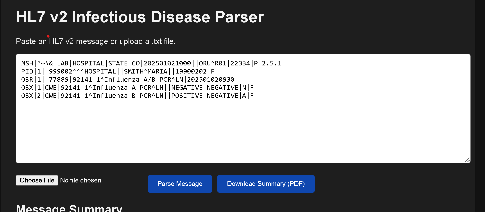
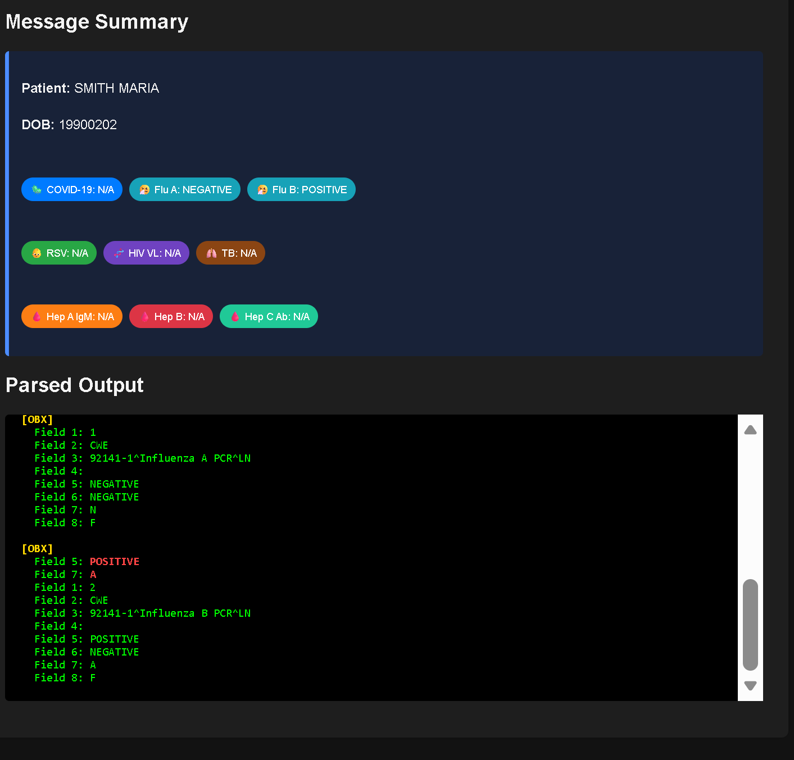
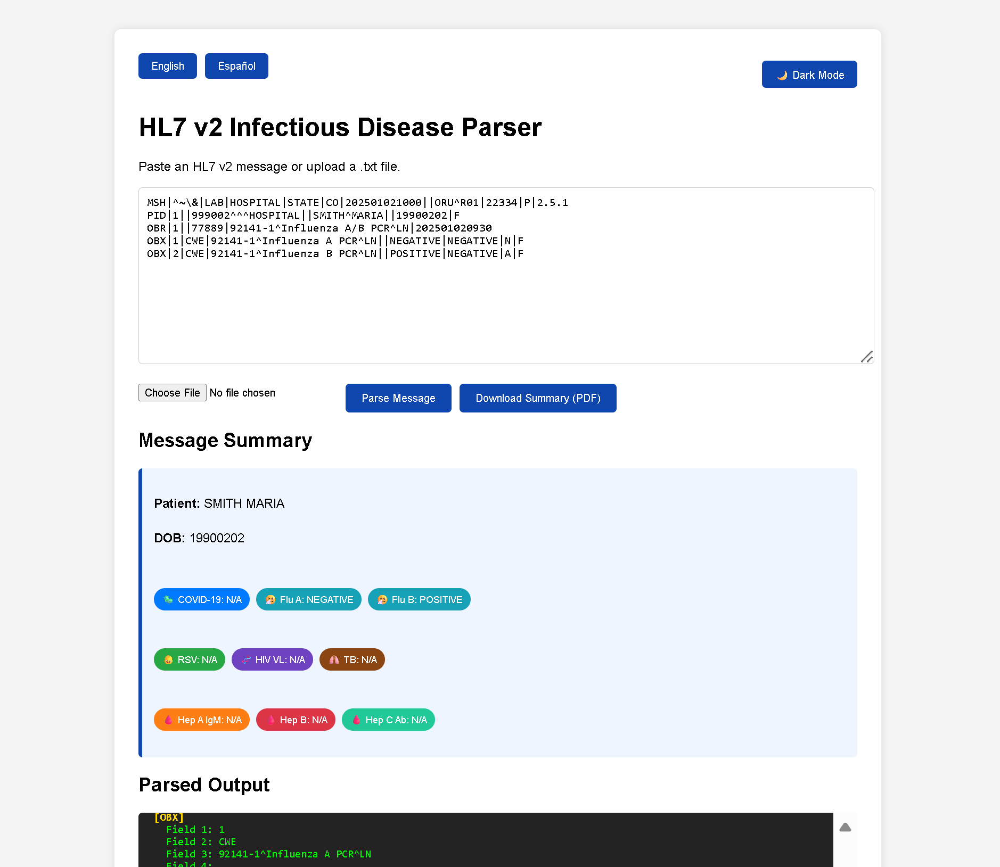
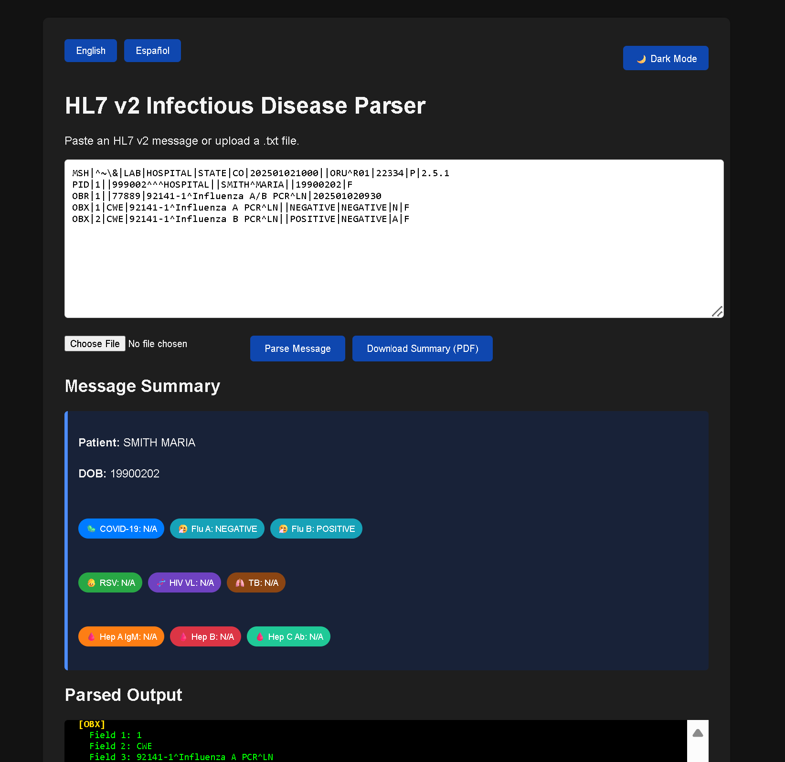
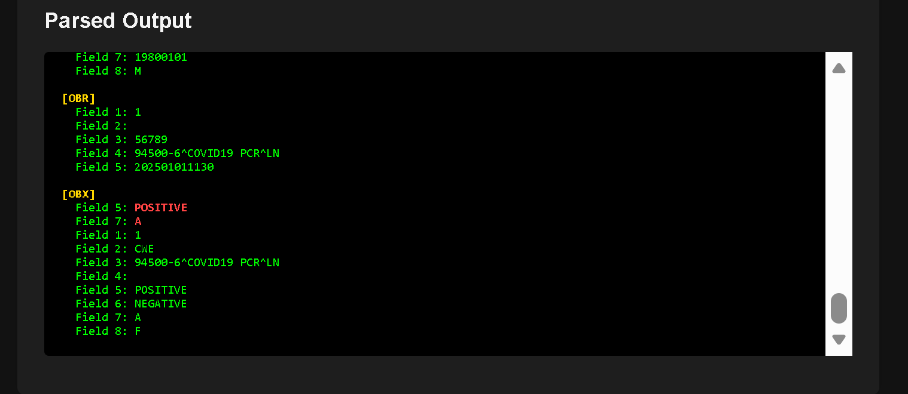
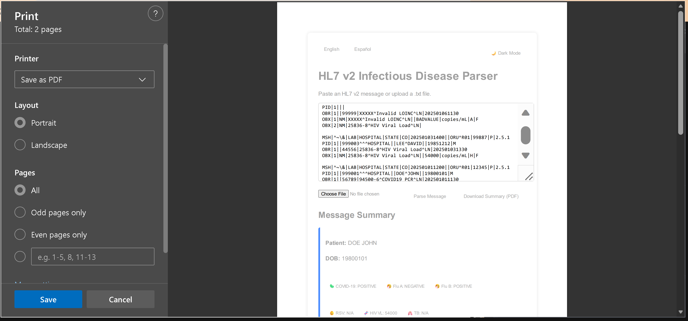

HL7 v2 Infectious Disease Parser: Clinical Data Visualization Tool Analizador HL7 v2 de Enfermedades Infecciosas: Herramienta de Visualización de Datos Clínicos
A specialized web‑based diagnostic utility designed to convert raw HL7 v2.x laboratory messages into a clean, human‑readable clinical summary. Built with a public‑health‑first mindset, the tool identifies infectious disease markers (COVID‑19, HIV, Hepatitis, TB, Flu A/B, RSV) and validates LOINC codes to ensure data integrity and clinical safety. Una utilidad de diagnóstico especializada basada en web diseñada para convertir mensajes de laboratorio HL7 v2.x sin procesar en un resumen clínico limpio y legible. Construida con una mentalidad orientada a la salud pública, la herramienta identifica marcadores de enfermedades infecciosas (COVID‑19, VIH, Hepatitis, TB, Gripe A/B, RSV) y valida códigos LOINC para garantizar la integridad de los datos y la seguridad clínica.

Raw HL7 Message Input Entrada de Mensaje HL7 Sin Procesar
The parser accepts raw HL7 v2 messages through multiple input methods: direct paste into the text area or upload of pipe-delimited .txt files. The interface is designed for rapid data entry in time-sensitive clinical scenarios. El analizador acepta mensajes HL7 v2 sin procesar a través de múltiples métodos de entrada: pegado directo en el área de texto o carga de archivos .txt delimitados por barras. La interfaz está diseñada para entrada rápida de datos en escenarios clínicos sensibles al tiempo.
Supported Format: HL7 v2.x pipe-delimited messages with MSH, PID, OBR, and OBX segments for laboratory results. Formato Soportado: Mensajes HL7 v2.x delimitados por barras con segmentos MSH, PID, OBR y OBX para resultados de laboratorio.
JavaScript-Based Regex Extraction Extracción Basada en Regex de JavaScript
The tool uses sophisticated regex patterns to extract critical segments (MSH, PID, OBR, OBX) and performs field-level validation (e.g., PID[5] for patient name, PID[7] for date of birth) to ensure data completeness. La herramienta utiliza patrones regex sofisticados para extraer segmentos críticos (MSH, PID, OBR, OBX) y realiza validación a nivel de campo (por ejemplo, PID[5] para nombre del paciente, PID[7] para fecha de nacimiento) para garantizar la integridad de los datos.

Clinical Dashboard Visualization Visualización de Tablero Clínico
Parsed results are immediately displayed in a color-coded clinical dashboard featuring patient demographics, disease status badges, and structured output. This instant visualization enables rapid triage and clinical decision-making. Los resultados analizados se muestran inmediatamente en un tablero clínico codificado por colores con datos demográficos del paciente, insignias de estado de enfermedad y salida estructurada. Esta visualización instantánea permite triaje rápido y toma de decisiones clínicas.
Disease-Specific Markers Marcadores Específicos de Enfermedad
The dashboard displays color-coded badges for six major infectious disease categories: COVID-19, Flu A/B, RSV, HIV, TB, and Hepatitis. Each badge provides instant visual feedback on patient status for rapid public health response. El tablero muestra insignias codificadas por colores para seis categorías principales de enfermedades infecciosas: COVID-19, Gripe A/B, RSV, VIH, TB y Hepatitis. Cada insignia proporciona retroalimentación visual instantánea sobre el estado del paciente para una respuesta rápida de salud pública.
Abnormal Result Highlighting: Critical or abnormal test results are automatically flagged in red for immediate clinical attention. Resaltado de Resultados Anormales: Los resultados de pruebas críticos o anormales se marcan automáticamente en rojo para atención clínica inmediata.
Bilingual Language Support Soporte de Idioma Bilingüe
Seamlessly switch between English and Spanish with instant translation updates. All interface elements—labels, error messages, clinical terms, and disease categories—adapt immediately to the selected language without page reload. Cambie sin problemas entre inglés y español con actualizaciones de traducción instantáneas. Todos los elementos de la interfaz—etiquetas, mensajes de error, términos clínicos y categorías de enfermedades—se adaptan inmediatamente al idioma seleccionado sin recargar la página.
Dynamic i18n Engine Motor i18n Dinámico
The system uses a centralized translation dictionary that updates all interface elements instantaneously. This reduces cognitive load for non-English-speaking clinicians during high-stress public health emergencies. El sistema utiliza un diccionario de traducción centralizado que actualiza todos los elementos de la interfaz instantáneamente. Esto reduce la carga cognitiva para clínicos que no hablan inglés durante emergencias de salud pública de alto estrés.
Health Equity: Bilingual support ensures equal access to critical diagnostic tools for Spanish-speaking healthcare workers and reduces language-related interpretation errors. Equidad en Salud: El soporte bilingüe garantiza acceso equitativo a herramientas de diagnóstico críticas para trabajadores de salud de habla hispana y reduce errores de interpretación relacionados con el idioma.

Adaptive Display Modes Modos de Visualización Adaptativos
Toggle between light and dark themes for optimal visibility across different clinical environments. Light mode provides excellent readability in bright office settings, while dark mode reduces eye strain during night shifts and emergency room use. Cambie entre temas claros y oscuros para una visibilidad óptima en diferentes entornos clínicos. El modo claro proporciona excelente legibilidad en configuraciones de oficina brillantes, mientras que el modo oscuro reduce la fatiga visual durante turnos nocturnos y uso en salas de emergencia.
High-Contrast Mode: Both themes maintain WCAG-compliant color contrast ratios for accessibility, ensuring disease badges and critical alerts remain clearly visible. Modo de Alto Contraste: Ambos temas mantienen proporciones de contraste de color compatibles con WCAG para accesibilidad, asegurando que las insignias de enfermedades y alertas críticas permanezcan claramente visibles.

Dark Mode for Extended Use Modo Oscuro para Uso Prolongado
Dark mode is specifically optimized for extended use during night shifts, emergency response scenarios, and low-light clinical environments. All status indicators, disease badges, and critical alerts maintain high visibility against the dark background. El modo oscuro está específicamente optimizado para uso prolongado durante turnos nocturnos, escenarios de respuesta de emergencia y entornos clínicos de poca luz. Todos los indicadores de estado, insignias de enfermedades y alertas críticas mantienen alta visibilidad contra el fondo oscuro.
The theme preserves color-coding semantics across both modes, ensuring consistent interpretation of positive/negative results, abnormal flags, and validation warnings regardless of display preference. El tema preserva la semántica de codificación por colores en ambos modos, asegurando interpretación consistente de resultados positivos/negativos, banderas anormales y advertencias de validación independientemente de la preferencia de visualización.

LOINC Code Validation System Sistema de Validación de Código LOINC
The parser includes a pre-loaded dictionary of valid LOINC codes specifically for infectious disease markers. When processing HL7 messages, the system automatically validates each LOINC code against this reference library to ensure data integrity. El analizador incluye un diccionario precargado de códigos LOINC válidos específicamente para marcadores de enfermedades infecciosas. Al procesar mensajes HL7, el sistema valida automáticamente cada código LOINC contra esta biblioteca de referencia para garantizar la integridad de los datos.
Validation Warnings Advertencias de Validación
Invalid or deprecated LOINC codes trigger immediate visual warnings with red text and inline error messages. This reduces the risk of incorrect diagnostic interpretation and prevents reporting errors in public health surveillance systems. Los códigos LOINC inválidos u obsoletos desencadenan advertencias visuales inmediatas con texto rojo y mensajes de error en línea. Esto reduce el riesgo de interpretación diagnóstica incorrecta y previene errores de informes en sistemas de vigilancia de salud pública.
Data Integrity: LOINC validation prevents misclassification of laboratory results, ensuring accurate disease surveillance and reporting to public health authorities. Integridad de Datos: La validación LOINC previene la clasificación errónea de resultados de laboratorio, asegurando vigilancia y reporte preciso de enfermedades a autoridades de salud pública.
One-Click PDF Export Exportación PDF con Un Clic
Export parsed clinical summaries as professionally formatted PDF documents with a single click. The export function generates complete documentation suitable for patient charts, regulatory reporting, and inter-facility communication. Exporte resúmenes clínicos analizados como documentos PDF formateados profesionalmente con un solo clic. La función de exportación genera documentación completa adecuada para gráficos de pacientes, informes regulatorios y comunicación entre instalaciones.
Clinical Documentation: PDFs include complete patient demographics, disease markers, test results, parsed segments, and validation warnings—ready for immediate clinical use. Documentación Clínica: Los PDF incluyen datos demográficos completos del paciente, marcadores de enfermedades, resultados de pruebas, segmentos analizados y advertencias de validación—listos para uso clínico inmediato.

Professional PDF Output Salida PDF Profesional
Generated PDFs maintain professional formatting with clear section headers, organized data presentation, and complete clinical information. The output is designed for immediate integration into electronic health records and regulatory submissions. Los PDF generados mantienen formato profesional con encabezados de sección claros, presentación de datos organizada e información clínica completa. La salida está diseñada para integración inmediata en registros electrónicos de salud y presentaciones regulatorias.
Each PDF includes all critical elements: patient demographics, test results with LOINC codes, disease status summaries, abnormal result flags, and validation warnings—providing a complete audit trail for quality assurance and compliance purposes. Cada PDF incluye todos los elementos críticos: datos demográficos del paciente, resultados de pruebas con códigos LOINC, resúmenes de estado de enfermedad, banderas de resultados anormales y advertencias de validación—proporcionando una pista de auditoría completa para propósitos de aseguramiento de calidad y cumplimiento.
Executive Summary Resumen Ejecutivo
The HL7 v2 Infectious Disease Parser is a lightweight, high‑impact application that transforms complex Electronic Lab Reporting (ELR) messages into an intuitive visual dashboard. By converting pipe‑delimited HL7 segments into color‑coded disease badges, abnormal result flags, and structured summaries, the tool enables rapid clinical triage and public health decision‑making. El Analizador HL7 v2 de Enfermedades Infecciosas es una aplicación ligera de alto impacto que transforma mensajes complejos de Informes de Laboratorio Electrónico (ELR) en un tablero visual intuitivo. Al convertir segmentos HL7 delimitados por barras verticales en insignias de enfermedades codificadas por colores, banderas de resultados anormales y resúmenes estructurados, la herramienta permite triaje clínico rápido y toma de decisiones de salud pública.
The system includes a bilingual interface (English/Spanish), a LOINC‑driven validation engine, and a fully client‑side parsing model that protects patient privacy by keeping all PHI in the browser. El sistema incluye una interfaz bilingüe (inglés/español), un motor de validación impulsado por LOINC y un modelo de análisis completamente del lado del cliente que protege la privacidad del paciente al mantener toda la PHI en el navegador.
Background & Problem Statement Antecedentes y Planteamiento del Problema
HL7 v2 remains the dominant standard for lab reporting, yet it presents several challenges: HL7 v2 sigue siendo el estándar dominante para informes de laboratorio, pero presenta varios desafíos:
Human unreadability: Messages like OBX|1|CWE|94500-6^COVID19^LN||POSITIVE are nearly impossible for non‑technical staff to interpret quickly. Ilegibilidad humana: Mensajes como OBX|1|CWE|94500-6^COVID19^LN||POSITIVE son casi imposibles de interpretar rápidamente para el personal no técnico.
Validation risks: Incorrect or deprecated LOINC codes can misclassify lab results, leading to reporting errors. Riesgos de validación: Los códigos LOINC incorrectos u obsoletos pueden clasificar erróneamente los resultados de laboratorio, lo que lleva a errores de informes.
Language barriers: Non‑English‑speaking clinicians face additional cognitive load interpreting English‑only technical data. Barreras de idioma: Los clínicos que no hablan inglés enfrentan una carga cognitiva adicional al interpretar datos técnicos solo en inglés.
Time constraints: In public health emergencies, every second counts — manual HL7 interpretation can delay critical interventions. Restricciones de tiempo: En emergencias de salud pública, cada segundo cuenta — la interpretación manual de HL7 puede retrasar intervenciones críticas.
Technical Architecture Arquitectura Técnica
HL7 v2 Message Parsing Análisis de Mensajes HL7 v2
JavaScript‑based regex extraction of critical segments (MSH, PID, OBR, OBX) with field‑level validation ensures accurate patient demographics and test result extraction. The parser supports both direct‑paste and .txt file upload workflows for maximum flexibility. La extracción basada en regex de JavaScript de segmentos críticos (MSH, PID, OBR, OBX) con validación a nivel de campo asegura extracción precisa de datos demográficos del paciente y resultados de pruebas. El analizador soporta flujos de trabajo de pegado directo y carga de archivos .txt para máxima flexibilidad.
Intelligent Result Mapping Mapeo Inteligente de Resultados
The system extracts patient demographics from PID segments, iterates through OBX segments to identify test results, automatically highlights abnormal results in red, and maps results to specific disease categories (COVID, HIV, Hepatitis, TB, Flu, RSV) for instant triage. El sistema extrae datos demográficos del paciente de segmentos PID, itera a través de segmentos OBX para identificar resultados de pruebas, resalta automáticamente resultados anormales en rojo, y mapea resultados a categorías específicas de enfermedades (COVID, VIH, Hepatitis, TB, Gripe, RSV) para triaje instantáneo.
Security & Privacy Seguridad y Privacidad
Client‑side processing only — no PHI leaves the browser, ensuring complete data privacy and HIPAA compliance. Safe HTML injection with scoped span wrappers prevents XSS vulnerabilities. No external API calls means minimal attack surface, and the static‑file architecture eliminates backend security concerns. Procesamiento solo del lado del cliente — ningún PHI sale del navegador, asegurando privacidad de datos completa y cumplimiento con HIPAA. La inyección HTML segura con envoltorios de span con alcance definido previene vulnerabilidades XSS. Sin llamadas a API externas significa superficie de ataque mínima, y la arquitectura de archivos estáticos elimina preocupaciones de seguridad del backend.
Accessibility Features Características de Accesibilidad
Visual semantics using icons and color cues support rapid comprehension, error‑proofing for missing fields and invalid LOINC codes prevents data quality issues, high‑contrast mode ensures usability in low‑light clinical settings, and keyboard navigation support enables accessibility for users with motor disabilities. La semántica visual usando iconos y señales de color soporta comprensión rápida, la protección contra errores para campos faltantes y códigos LOINC inválidos previene problemas de calidad de datos, el modo de alto contraste asegura usabilidad en entornos clínicos de poca luz, y el soporte de navegación por teclado permite accesibilidad para usuarios con discapacidades motoras.
Measurable Impact Impacto Medible
3-Second Interpretation Interpretación en 3 Segundos
Processes a 50‑line HL7 message in under 3 seconds, enabling rapid clinical response during public health emergencies. Procesa un mensaje HL7 de 50 líneas en menos de 3 segundos, permitiendo respuesta clínica rápida durante emergencias de salud pública.
Enhanced Data Integrity Integridad de Datos Mejorada
Automated LOINC validation prevents misclassification errors and ensures accurate public health reporting. La validación LOINC automatizada previene errores de clasificación y asegura informes de salud pública precisos.
Reduced Clinical Risk Riesgo Clínico Reducido
Immediate highlighting of abnormal results prevents oversight of critical findings in high‑volume lab reporting scenarios. El resaltado inmediato de resultados anormales previene pasar por alto hallazgos críticos en escenarios de informes de laboratorio de alto volumen.
Improved Outbreak Response Respuesta Mejorada a Brotes
Color-coded disease badges enable rapid triage during outbreak scenarios, supporting faster public health interventions. Las insignias de enfermedades codificadas por colores permiten triaje rápido durante escenarios de brotes, apoyando intervenciones de salud pública más rápidas.
Technology Stack Pila Tecnológica
Languages: JavaScript (ES6+), Python 3.x, HTML5, CSS3 Lenguajes: JavaScript (ES6+), Python 3.x, HTML5, CSS3
Standards: HL7 v2.x (MSH, PID, OBR, OBX segments), LOINC code validation Estándares: HL7 v2.x (segmentos MSH, PID, OBR, OBX), validación de código LOINC
Libraries: hl7apy (Python for HL7 parsing), regex patterns for segment extraction Bibliotecas: hl7apy (Python para análisis HL7), patrones regex para extracción de segmentos
APIs: Web File API for .txt uploads, Print API for PDF generation APIs: Web File API para cargas .txt, Print API para generación de PDF